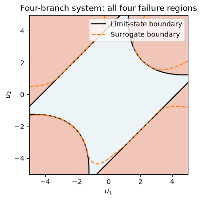
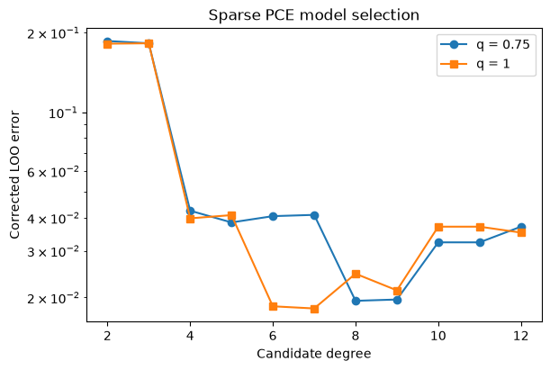
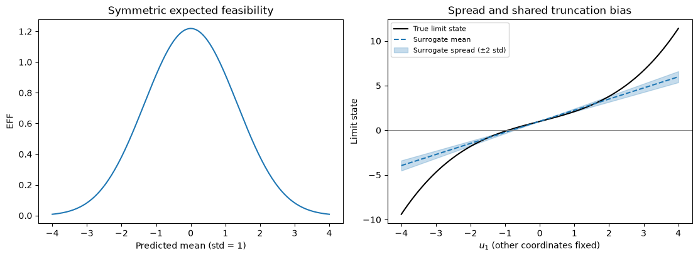

Download notebook · Download runnable bundle
Dependencies: PySTRA with the optional al extra.
Active learning for reliability analysis#
Build surrogate-assisted reliability analyses and test them against analytical and published benchmarks.
Before you start: FORM and simulation; install the optional al extra for Kriging.
Problem and approach#
Active learning replaces many expensive limit-state evaluations with a surrogate, then enriches the training design near the predicted failure boundary.
This tutorial credits Bruno Sudret’s group, particularly Stefano Marelli, Maliki Moustapha and Bruno Sudret, for bootstrap PCE local-error estimation and the general active-learning reliability framework:
Echard, Gayton & Lemaire (2011), AK-MCS.
Bichon et al. (2008), expected feasibility.
Marelli & Sudret (2018), bootstrap sparse PCE.
Teixeira, Nogal & O’Connor (2021), adaptive metamodel reliability review.
Moustapha, Marelli & Sudret (2022), survey, framework and benchmark.
PySTRA adapts the UQLab 2.2.0 adaptive sparse-PCE implementation: hybrid least-angle regression, corrected leave-one-out model selection, degree/hyperbolic truncation searches and bootstrap refits on the selected basis. The source copyright and BSD notice are retained in THIRD_PARTY_NOTICES. Numerical fixtures compare unmodified UQLab routines, executed in Octave, against PySTRA on four designs. This does not imply endorsement by the authors.
The sparse-regression foundation is Géraud Blatman and Bruno Sudret (2011), Adaptive sparse polynomial chaos expansion based on Least Angle Regression.
The normal-sum and beam problems also appear in UQLab’s reliability benchmarks. We derive their reference probabilities analytically below, rather than copying rounded reference values.
Install the optional Kriging dependency from a v2.0 checkout with pip install -e ".[al]". PCE uses the existing NumPy/SciPy dependencies.
[1]:
import numpy as np
import pandas as pd
import matplotlib.pyplot as plt
from scipy.integrate import quad
from scipy.stats import norm
import pystra as ra
from pystra.active_learning import ActiveLearning, PCESurrogate, learning_eff
Normal sum: an exact reference#
For five independent \(X_i\sim N(1,1)\) and \(g=\sum_i X_i\), \(g\sim N(5,5)\) (the second parameter here is variance). Failure means \(g\leq0\): \(P_f=\Phi(-\sqrt{5})=0.01267366\).
All surrogates are fitted in independent normal coordinates. Only true limit-state evaluations are transformed to physical coordinates. A degree-one PCE can represent this example exactly.
[2]:
model = ra.StochasticModel()
for index in range(5):
model.add_variable(ra.Normal(f"x{index}", 1, 1))
limit_state = ra.LimitState(lambda x0, x1, x2, x3, x4: x0 + x1 + x2 + x3 + x4)
analysis = ActiveLearning(
model=model,
limit_state=limit_state,
surrogate="pce",
surrogate_kwargs={"degree": 1},
rng=7,
)
normal_result = analysis.run()
normal_reference = norm.cdf(-np.sqrt(5))
print(normal_result)
print(f"Analytic Pf: {normal_reference:.8f}")
assert normal_result.converged
ActiveLearningResult(estimate=ReliabilityEstimate(failure_probability=0.01172, sampling_cov=0.029038634968247264, sampling_interval=(0.01106215119711848, 0.0124063930386602), confidence_level=0.95, n_samples=100000, method='monte_carlo', sampling_dependence='independent', converged=True, status='completed', diagnostics=()), converged=True, status='converged', n_limit_state_evaluations=30, history=(LearningStep(failure_probability=0.0133, learning_score=75807242632.87141, n_limit_state_evaluations=30, probability_band=(0.0133, 0.0133), beta_band=(2.2173380441467163, 2.2173380441467163), learning_satisfied=True, estimation_converged=True, sampling_cov=None, bootstrap_probability_band=None),))
Analytic Pf: 0.01267366
Compose the four components explicitly#
The same normal-sum problem can be configured using separate surrogate, reliability estimator, learning function and stopping criterion objects. The public import path is still pystra.active_learning.
Here the stopping policy combines the learning threshold with the beta-band and beta-stability rules from Moustapha, Marelli & Sudret (2022), Eqs. (2)–(3). Both beta tests must hold over two consecutive iterations. Stability needs a previous fit for each comparison, so there are at least three fits. Even with this exactly representable polynomial, the policy deliberately requires additional observations before it accepts the history.
probability_band classifies the fixed candidate pool at mean ± 2 std; beta_band transforms those probabilities into ascending reliability indices. These are surrogate diagnostics, not confidence limits on the true failure probability. Bootstrap spread can miss shared model bias. The independent final MC estimate has separate sampling diagnostics in result.estimate.
This example uses independent final Monte Carlo and a fixed normal enrichment pool. The active subset tutorial shows how SubsetSimulationEstimator also generates enrichment populations after each fit. A final-only custom estimator still retains the fixed MC enrichment workflow.
[3]:
from pystra.active_learning import (
MonteCarloEstimator,
UFunction,
LearningThreshold,
BetaBounds,
BetaStability,
AllCriteria,
)
composed = ActiveLearning(
model=model,
limit_state=limit_state,
surrogate=PCESurrogate(degree=1, seed=7),
estimator=MonteCarloEstimator(n_samples=100_000),
learning_function=UFunction(threshold=2),
stopping_criterion=AllCriteria(
criteria=(
LearningThreshold(),
BetaBounds(consecutive=2),
BetaStability(consecutive=2),
)
),
rng=7,
)
composed_result = composed.run()
assert composed_result.converged
assert len(composed_result.history) >= 3
print(composed_result.estimate)
print(f"Analytic Pf: {normal_reference:.8f}")
pd.DataFrame(
[
{
"True evaluations": fit.n_limit_state_evaluations,
"Candidate Pf": fit.failure_probability,
"Candidate beta": fit.beta,
"Beta band": fit.beta_band,
"Learning threshold met": fit.learning_satisfied,
}
for fit in composed_result.history
]
)
ReliabilityEstimate(failure_probability=0.01172, sampling_cov=0.029038634968247264, sampling_interval=(0.01106215119711848, 0.0124063930386602), confidence_level=0.95, n_samples=100000, method='monte_carlo', sampling_dependence='independent', converged=True, status='completed', diagnostics=())
Analytic Pf: 0.01267366
[3]:
| True evaluations | Candidate Pf | Candidate beta | Beta band | Learning threshold met | |
|---|---|---|---|---|---|
| 0 | 30 | 0.0133 | 2.217338 | (2.2173380441467163, 2.2173380441467163) | True |
| 1 | 31 | 0.0133 | 2.217338 | (2.2173380441467163, 2.2173380441467163) | True |
| 2 | 32 | 0.0133 | 2.217338 | (2.2173380441467163, 2.2173380441467163) | True |
Four-branch series system#
The classical \(k=6\) benchmark is discussed by Schueremans & Van Gemert (2005). For independent standard normal \(X_1,X_2\), define \(V=(X_1-X_2)/\sqrt2\) and \(W=(X_1+X_2)/\sqrt2\). These rotated coordinates are independent standard normals. The four branches reduce to
Consequently,
This gives an independent deterministic reference, approximately 0.00445733. The nonsmooth minimum is a demanding global polynomial target, so we use Kriging here. A good result on a smooth polynomial does not validate PCE for this system.
[4]:
def four_branch(x0, x1):
along = (x0 + x1) / np.sqrt(2)
across = (x0 - x1) / np.sqrt(2)
return np.minimum(
3 + 0.2 * across**2 - np.abs(along), np.sqrt(2) * (3 - np.abs(across))
)
four_reference = (
2 * norm.sf(3)
+ quad(lambda v: 2 * norm.sf(3 + 0.2 * v * v) * norm.pdf(v), -3, 3, epsabs=1e-13)[0]
)
model = ra.StochasticModel()
model.add_variable(ra.Normal("x0", 0, 1))
model.add_variable(ra.Normal("x1", 0, 1))
four_analysis = ActiveLearning(
model=model,
limit_state=ra.LimitState(four_branch),
rng=7,
n_candidates=12_000,
surrogate_kwargs={"n_restarts": 0},
)
four_result = four_analysis.run()
assert four_result.converged
print(f"Quadrature Pf: {four_reference:.8f}")
print(
f"Surrogate Pf: {four_result.failure_probability:.8f}; true calls: {four_result.n_limit_state_evaluations}"
)
Quadrature Pf: 0.00445733
Surrogate Pf: 0.00434000; true calls: 48
[5]:
fig, ax = ra.plotting.plot_limit_state(
lambda points: four_branch(*points.T),
bounds=((-5, 5), (-5, 5)),
surrogate=four_analysis.surrogate_model,
labels=("$u_1$", "$u_2$"),
)
ax.set_title("Four-branch system: all four failure regions")
plt.show()

Figure. The four-branch boundary has four distinct failure regions. Comparing true and surrogate contours exposes regions a single local approximation can miss.
Adaptive sparse PCE on the same four-branch problem#
Use method="lars" (the default), provide candidate degrees and q-norms, and inspect fit_result. Each enrichment repeats sparse selection and OLS fitting. Here we disable degree early stopping to search the complete specified range. A larger U threshold asks for more confident candidate classifications.
The bootstrap holds the selected support fixed; it does not account for uncertainty in model selection or common truncation bias. PySTRA uses uniform pairs resampling. The local UQLab index generator weights endpoint observations less heavily; the parity fixtures use common uniform indices on both sides.
This remains single-point enrichment. It does not reproduce every enrichment and stopping strategy in the published active-learning framework.
fit_result.n_rank_deficient_bootstrap reports how many resampled fits required a minimum-norm solution. Such draws are retained, as in UQLab; a large count is useful evidence that the selected support is ambitious for the available design. Grow the design and independently validate predictions.
[6]:
sparse_model = ra.StochasticModel()
sparse_model.add_variable(ra.Normal("x0", 0, 1))
sparse_model.add_variable(ra.Normal("x1", 0, 1))
sparse_analysis = ActiveLearning(
model=sparse_model,
limit_state=ra.LimitState(four_branch),
surrogate="pce",
surrogate_kwargs={
"degree": tuple(range(2, 13)),
"q_norm": (0.75, 1.0),
"degree_early_stop": False,
},
n_initial=50,
n_candidates=12_000,
learning_threshold=3,
rng=7,
)
sparse_result = sparse_analysis.run()
fit = sparse_analysis.surrogate_model.fit_result
assert sparse_result.converged
print(f"Pf: {sparse_result.failure_probability:.8f}; quadrature: {four_reference:.8f}")
print(
f"True evaluations: {sparse_result.n_limit_state_evaluations}; degree: {fit.degree}; q: {fit.q_norm}; terms: {len(fit.indices)}"
)
candidate_scores = pd.DataFrame(
[
{
"Degree": candidate.degree,
"q": candidate.q_norm,
"Selected terms": candidate.n_selected,
"Corrected LOO": candidate.corrected_loo_error,
}
for candidate in fit.candidates
]
)
candidate_scores
Pf: 0.00442000; quadrature: 0.00445733
True evaluations: 119; degree: 7; q: 1.0; terms: 16
[6]:
| Degree | q | Selected terms | Corrected LOO | |
|---|---|---|---|---|
| 0 | 2 | 0.75 | 3 | 0.185995 |
| 1 | 2 | 1.00 | 4 | 0.181677 |
| 2 | 3 | 0.75 | 5 | 0.182316 |
| 3 | 3 | 1.00 | 5 | 0.182316 |
| 4 | 4 | 0.75 | 6 | 0.042527 |
| 5 | 4 | 1.00 | 8 | 0.039793 |
| 6 | 5 | 0.75 | 7 | 0.038410 |
| 7 | 5 | 1.00 | 9 | 0.040926 |
| 8 | 6 | 0.75 | 10 | 0.040558 |
| 9 | 6 | 1.00 | 16 | 0.018523 |
| 10 | 7 | 0.75 | 10 | 0.041014 |
| 11 | 7 | 1.00 | 16 | 0.018177 |
| 12 | 8 | 0.75 | 17 | 0.019425 |
| 13 | 8 | 1.00 | 18 | 0.024588 |
| 14 | 9 | 0.75 | 18 | 0.019650 |
| 15 | 9 | 1.00 | 20 | 0.021279 |
| 16 | 10 | 0.75 | 14 | 0.032297 |
| 17 | 10 | 1.00 | 13 | 0.037011 |
| 18 | 11 | 0.75 | 14 | 0.032297 |
| 19 | 11 | 1.00 | 13 | 0.037011 |
| 20 | 12 | 0.75 | 13 | 0.037011 |
| 21 | 12 | 1.00 | 14 | 0.035159 |
[7]:
validation_points = np.random.default_rng(892).normal(size=(100_000, 2))
true_failure = four_branch(*validation_points.T) <= 0
predicted_failure = (
np.concatenate(
[
sparse_analysis.surrogate_model.predict(batch)[0]
for batch in np.array_split(validation_points, 50)
]
)
<= 0
)
false_positive = np.mean(predicted_failure & ~true_failure)
false_negative = np.mean(~predicted_failure & true_failure)
print(f"False-positive probability mass: {false_positive:.6f}")
print(f"False-negative probability mass: {false_negative:.6f}")
print(
f"Total disagreement / reference Pf: {(false_positive + false_negative)/four_reference:.1%}"
)
fig, ax = ra.plotting.plot_pce_selection(fit)
plt.show()
False-positive probability mass: 0.000320
False-negative probability mass: 0.000200
Total disagreement / reference Pf: 11.7%

Figure. Sparse-PCE selection compares candidate truncations and their cross-validation errors; a small regression error still requires a separate failure-classification check.
Lognormal beam: another exact reference#
For a simply supported beam under uniform load, midspan deflection is \(D=5pL^4/(32Ebh^3)\). The limit is 0.015 m. Inputs are independent lognormal variables with the physical means and standard deviations below. Units are m, MN/m and MN/m².
Because \(\log D=\log(5/32)+\log p+4\log L-\log E-\log b-3\log h\), its distribution is exactly normal. We can derive \(P(D\geq0.015)\) without simulation. Here PCE approximates the smooth exponential response in normal coordinates; adaptive degree selection can improve the approximation, while the first example is already exactly linear.
[8]:
names = ("b", "h", "length", "elasticity", "load")
means = np.array([0.15, 0.3, 5, 30000, 0.01])
stds = np.array([0.0075, 0.015, 0.05, 4500, 0.002])
model = ra.StochasticModel()
for name, mean, std in zip(names, means, stds):
model.add_variable(ra.Lognormal(name, mean, std))
powers = np.array([-1, -3, 4, -1, 1])
variances = np.log1p((stds / means) ** 2)
log_mean = np.log(5 / 32) + powers @ (np.log(means) - variances / 2)
log_std = np.sqrt(powers**2 @ variances)
beam_reference = norm.sf((np.log(0.015) - log_mean) / log_std)
beam_analysis = ActiveLearning(
model=model,
limit_state=ra.LimitState(
lambda b, h, length, elasticity, load: 0.015
- 5 * load * length**4 / (32 * elasticity * b * h**3)
),
surrogate="pce",
rng=7,
n_candidates=12_000,
)
beam_result = beam_analysis.run()
assert beam_result.converged
pd.DataFrame(
[
{
"Problem": name,
"Reference Pf": reference,
"Estimated Pf": result.failure_probability,
"True evaluations": result.n_limit_state_evaluations,
"Sampling CoV": result.sampling_cov,
"Status": result.status,
}
for name, reference, result in [
("Normal sum", normal_reference, normal_result),
("Four branch", four_reference, four_result),
("Beam", beam_reference, beam_result),
]
]
)
[8]:
| Problem | Reference Pf | Estimated Pf | True evaluations | Sampling CoV | Status | |
|---|---|---|---|---|---|---|
| 0 | Normal sum | 0.012674 | 0.01172 | 30 | 0.029039 | converged |
| 1 | Four branch | 0.004457 | 0.00434 | 48 | 0.047897 | converged |
| 2 | Beam | 0.017206 | 0.01753 | 61 | 0.023674 | converged |
What the uncertainty estimates mean#
EFF is the Gaussian expectation \(E[\max(0,2\sigma-|G|)]\). It is symmetric in the predicted mean and has the units of the limit-state function. Changing the scale of \(g\) requires changing the EFF stopping tolerance.
PCE uncertainty is local bootstrap prediction spread. It can be small while all fits share the same truncation bias. It is neither a calibrated Gaussian posterior nor a total reliability error bound. The Gaussian assumption in EFF is therefore a heuristic when used with PCE.
[9]:
locations = np.linspace(-4, 4, 161)
eff = learning_eff(locations, np.ones_like(locations))[0]
rng = np.random.default_rng(34)
training = rng.normal(size=(60, 1))
surrogate = PCESurrogate(degree=2, seed=9)
surrogate.fit(training, (1 + training[:, 0] + 0.1 * training[:, 0] ** 3))
fig, axes = plt.subplots(1, 2, figsize=(11, 4), layout="constrained")
axes[0].plot(locations, eff)
axes[0].set(
xlabel="Predicted mean (std = 1)",
ylabel="EFF",
title="Symmetric expected feasibility",
)
ra.plotting.plot_surrogate_slice(
surrogate,
locations[:, None],
limit_state=lambda points: 1 + points[:, 0] + 0.1 * points[:, 0] ** 3,
ax=axes[1],
)
axes[1].set_title("Spread and shared truncation bias")
axes[1].legend(fontsize=8)
plt.show()

Figure. EFF is symmetric around zero predicted mean. The surrogate slice also shows that bootstrap spread can be small while truncation bias remains.
Validation and stopping status#
The regression suite runs three seeds (7, 23, 101) for Kriging U/EFF on the normal sum and four-branch problem, Kriging U on the beam, and adaptive PCE U on the normal sum, beam and four-branch system. It compares estimates with the independent references, allows four binomial standard errors plus 5% surrogate approximation error, and checks classifications against 100,000 independent true evaluations. EFF is separately checked against direct payoff quadrature. The combined learning-threshold/beta-band/beta-stability policy is also tested on normal-sum and four-branch problems with the same three seeds, probability and classification criteria. Contract tests exercise insufficient history, interrupted convergence, all-safe predictions, budget termination and custom estimator uncertainty.
run() returns an immutable result. Nonconvergence emits a warning and keeps an explicitly unfinished estimate. max_iterations, candidate_exhaustion and sampling_precision explain why the run stopped. Increase the appropriate budget and investigate surrogate quality before accepting an unfinished result.
The final Monte Carlo population is independent of the enrichment design. sampling_cov and sampling_interval describe only sampling error conditional on the fitted surrogate. Zero failures do not imply zero uncertainty. A converged status means the finite-pool learning and sampling criteria passed; it does not guarantee discovery of every failure region or remove surrogate bias.
The four-branch boundary plot and independent classification tests are useful checks that a probability comparison alone would miss. For expensive structural models, reserve true evaluations for an analogous independent validation.
A 95% sampling interval need not contain the analytic reference in every seeded run, even for an exact surrogate. This is why the regression tests use a four-standard-error sampling tolerance. The four-branch plot also shows growing discrepancies in remote tails where the finite candidate population supplies little information.
For classification disagreement, the tests allow at most 10% of the reference Pf for Kriging and the smooth PCE examples, and 15% for the nonsmooth four-branch PCE example. Every case uses the same probability-estimate tolerance, and all four failure regions are checked separately. These are explicit benchmark acceptance budgets, not general error bounds.
method="ols" retains dense fitting. Default sparse degree candidates are 1 through 5; provide a wider range when warranted by independent validation. Both PCE methods use NumPy/SciPy, while Kriging uses the optional al extra.
Continue: User guide · API reference · Theory